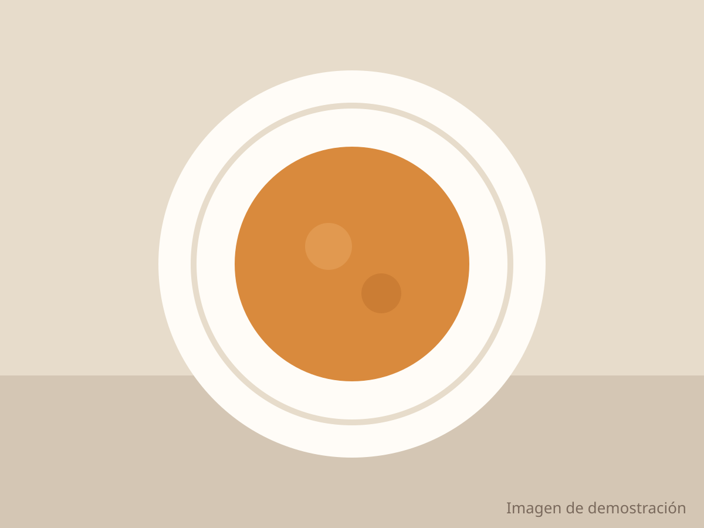

Crema de calabaza
Una crema suave y aterciopelada con calabaza asada y un toque de nuez moscada.

Ingredientes
- 800 g calabaza pelada
- 1 puerro
- 1 patata mediana
- 750 ml caldo de verduras
- 2 cucharadas aceite de oliva
- ½ cucharadita nuez moscada
- Sal y pimienta al gusto
Preparación
Trocea la calabaza, la patata y el puerro.
Rehoga el puerro en el aceite 5 minutos. Añade la calabaza y la patata y cubre con el caldo.
Cuece 25 minutos a fuego medio, hasta que todo esté blando.
Tritura hasta obtener una crema fina, añade la nuez moscada y rectifica de sal y pimienta.
Consejos
- Para una crema más ligera, sustituye parte del caldo por agua.